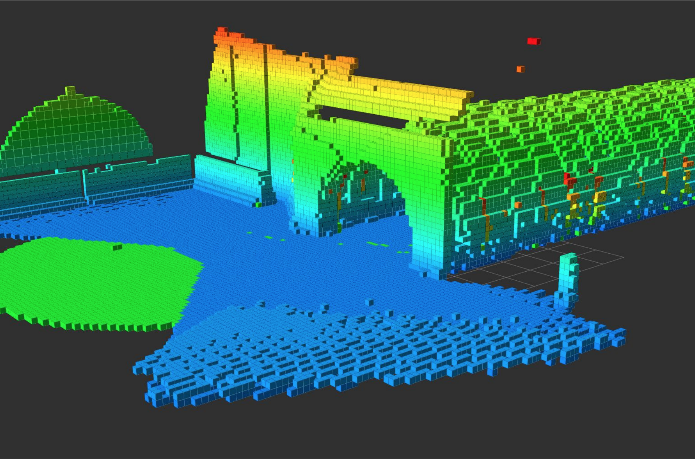
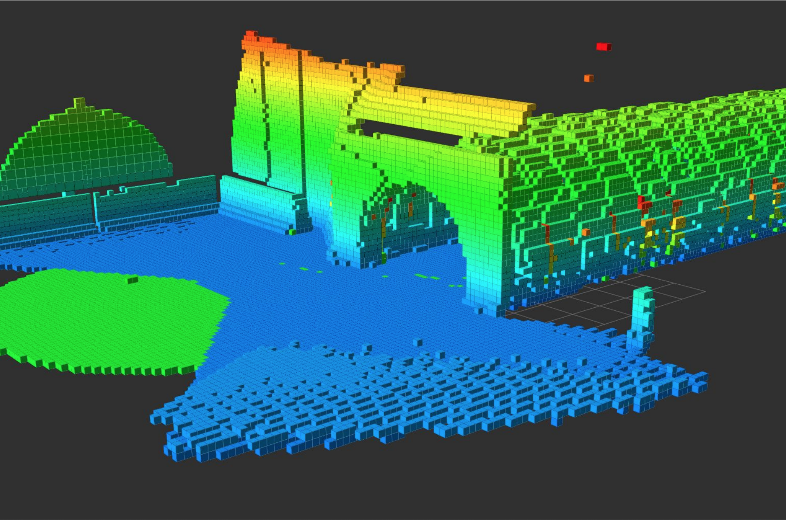

The robot in the lab that we're using for physical experiments. The pan-tilt unit can be seen on top of the robot, with a Pico Monstar Flash LIDAR on top.
One of the first policies learned via a simple simulated environment and Deep-Q Learning. As you can see this policy isn't great and needed some work!
Here we are comparing 3D maps, in a lap around the lab, created by our pan-tilt unit and an Ouster 64-beam LIDAR. The pan-tilt was doing a super simple looping sweep, and its data on the right is noticably scarcer than the LIDAR on the right.
We've been doing a lot of experiments in simulation. Here's a picture of an OctoMap with a sweeping pan-tilt, note that this map is almost perfect so we had to introduce significant noise in the sensor measurements to get this to be more realistic.
About this research
The motivation behind this research is that standard LIDAR sensors used for LIDAR-Inertial SLAM, or just mapping in some cases, are prohibitively expensive. We hope to reproduce results from $10,000 LIDAR sensors with a depth camera aboard a pan-tilt gimbal, which can cost less than $1,000 in total. In order to do this, however, we must develop smart and efficient algorithms to control the pose of the camera to best aid in localization and map creation, given characteristics of the environment.
As a first attempt at maximizing camera views, we used Deep-Q Learning to learn a control policy maximizing the number of new features seen per view. This policy is essentially open-loop and doesn't exploit environmental information, so we are currently extending this work to be environmentally aware.